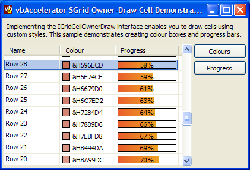

VB5 SGrid 2 Owner Draw Demonstration (60K)
VB5 SGrid 2 Owner Draw Demonstration (60K)
 VB6 SGrid 2 Owner Draw Demonstration (56K)
VB6 SGrid 2 Owner Draw Demonstration (56K)
 24 Jan 2004
24 Jan 2004
First Posted

Owner-Draw Cells with SGrid 2.0
Create Progress Bars, Colour indicators and more...
This sample demonstrates implementing the IOwnerDrawGridCell interface for SGrid 2.0 to create customised cells within a grid. Two easy to re-use examples are provided: a colour indicator and a progress bar.
Owner-Draw Cells in SGrid 2.0
SGrid 2.0 allows any cell to be owner-drawn by implementing the IOwnerDrawGridCell interface and then hooking your implementation up to the grid. Using an interface allows early-binding between your drawing implementation and the grid itself; this provides much better performance than using an event. The interface has only one method to implement, Draw. The signature is as follows:
Private Sub IGridCellOwnerDraw_Draw( _
cell As cGridCell, _
ByVal lHDC As Long, _
ByVal eDrawStage As ECGDrawStage, _
ByVal lLeft As Long, ByVal lTop As Long, _
ByVal lRight As Long, ByVal lBottom As Long, _
bSkipDefault As Boolean _
)
The parameters are as follows:
- cell
A cGridCell object populated with all the information needed about the cell to draw. - lhDC
Handle to the device context to draw on to. You can use any of the GDI API calls to draw onto this DC. Note that the DC is an offscreen DC and SGrid is responsible for shifting its contents onto the display. - eDrawStage
The current drawing stage of the cell. SGrid 2 calls this method up to three times for each cell with the following draw stages:- ecgBeforeAll - before any drawing for the cell has been performed.
- ecgBeforeIconAndText - after the grid's border and highlighing have been drawn but before the contents of the cell.
- ecgAfter - after the grid has completed drawing the cell.
- lLeft, lTop,
lRight, lBottom
The coordinates of the bounding rectangle of the cell within the offscreen DC. - bSkipDefault
Setting this parameter to True instructs the grid that you do not want it to perform any more drawing for the cell (of course, when eDrawStage = ecgAfter it has no effect, since there is no more drawing to be done).
Note that implementing an Owner-Draw cell is relatively simple when you draw at the ecgBeforeIconAndText or ecgAfter drawing stages. If you draw before this life will be significantly harder; but you will very rarely want to do it.
One of the nice things about implementing owner-draw in SGrid is that all of the grid's existing features for cells, such as sorting, selection, hot-tracking, optimised redraw and so on work just as before for an owner-draw cell. Changing the text or icon properties of the cell causes the cell to redraw automatically, calling your implementation. And by storing the data in the cell's Text, ItemData or Icon properties you can use the grid's inbuilt sorting mechanisms to sort the owner draw cells correctly. So all you need to worry about is drawing something suitably cool into the cell itself.
And Owner-Draw Cell Implementation
I'll briefly describe how the progress bar Owner-Draw cell is implemented in this section. My progress bar cell is rendered with a gradient background which uses the GDI API call GradientFill. This is a very flexible call with a somewhat hostile interface so before we begin here's the wrapper code I use to call it for a simple linear gradient:
Private Type RECT
left As Long
top As Long
right As Long
bottom As Long
End Type
Private Type TRIVERTEX
x As Long
y As Long
Red As Integer
Green As Integer
Blue As Integer
Alpha As Integer
End Type
Private Type GRADIENT_RECT
UpperLeft As Long
LowerRight As Long
End Type
Private Declare Function GradientFill Lib "msimg32" ( _
ByVal hDC As Long, _
pVertex As TRIVERTEX, _
ByVal dwNumVertex As Long, _
pMesh As GRADIENT_RECT, _
ByVal dwNumMesh As Long, _
ByVal dwMode As Long) As Long
Private Const GRADIENT_FILL_TRIANGLE = &H2&
Private Declare Function CreateSolidBrush Lib "gdi32" ( _
ByVal crColor As Long) As Long
Private Declare Function FillRect Lib "user32" ( _
ByVal hDC As Long, lpRect As RECT, _
ByVal hBrush As Long) As Long
Private Declare Function DeleteObject Lib "gdi32" ( _
ByVal hObject As Long) As Long
Private Declare Function OleTranslateColor Lib "OLEPRO32.DLL" ( _
ByVal OLE_COLOR As Long, _
ByVal HPALETTE As Long, _
pccolorref As Long) As Long
Public Const CLR_INVALID = -1
Public Enum GradientFillRectType
GRADIENT_FILL_RECT_H = 0
GRADIENT_FILL_RECT_V = 1
End Enum
Public Sub GradientFillRect( _
ByVal lHDC As Long, _
tR As RECT, _
ByVal oStartColor As OLE_COLOR, _
ByVal oEndColor As OLE_COLOR, _
ByVal eDir As GradientFillRectType _
)
Dim hBrush As Long
Dim lStartColor As Long
Dim lEndColor As Long
Dim lR As Long
' Use GradientFill:
lStartColor = TranslateColor(oStartColor)
lEndColor = TranslateColor(oEndColor)
Dim tTV(0 To 1) As TRIVERTEX
Dim tGR As GRADIENT_RECT
setTriVertexColor tTV(0), lStartColor
tTV(0).x = tR.left
tTV(0).y = tR.top
setTriVertexColor tTV(1), lEndColor
tTV(1).x = tR.right
tTV(1).y = tR.bottom
tGR.UpperLeft = 0
tGR.LowerRight = 1
GradientFill lHDC, tTV(0), 2, tGR, 1, eDir
If (Err.Number <> 0) Then
' Fill with solid brush:
hBrush = CreateSolidBrush(TranslateColor(oEndColor))
FillRect lHDC, tR, hBrush
DeleteObject hBrush
End If
End Sub
Private Sub setTriVertexColor(tTV As TRIVERTEX, lColor As Long)
Dim lRed As Long
Dim lGreen As Long
Dim lBlue As Long
lRed = (lColor And &HFF&) * &H100&
lGreen = (lColor And &HFF00&)
lBlue = (lColor And &HFF0000) \ &H100&
setTriVertexColorComponent tTV.Red, lRed
setTriVertexColorComponent tTV.Green, lGreen
setTriVertexColorComponent tTV.Blue, lBlue
End Sub
Private Sub setTriVertexColorComponent( _
ByRef iColor As Integer, _
ByVal lComponent As Long _
)
If (lComponent And &H8000&) = &H8000& Then
iColor = (lComponent And &H7F00&)
iColor = iColor Or &H8000
Else
iColor = lComponent
End If
End Sub
Private Function TranslateColor( _
ByVal oClr As OLE_COLOR, _
Optional hPal As Long = 0 _
) As Long
' Convert Automation color to Windows color
If OleTranslateColor(oClr, hPal, TranslateColor) Then
TranslateColor = CLR_INVALID
End If
End Function
That out of the way, we can look at drawing the cell. The first thing to do is to implement the interface and wire it up to the grid. In this case I'll implement it in the form that holds the grid, but you can implement it in a separate class if you prefer.
Implements IGridCellOwnerDraw
Private Sub Form_Load()
' Connect the grid to the owner-draw
' implementation:
grdOwnerDrawDemo.OwnerDrawImpl = Me
End Sub
Private Sub IGridCellOwnerDraw_Draw( _
cell As cGridCell, _
ByVal lHDC As Long, _
ByVal eDrawStage As ECGDrawStage, _
ByVal lLeft As Long, ByVal lTop As Long, _
ByVal lRight As Long, ByVal lBottom As Long, _
bSkipDefault As Boolean _
)
If (eDrawStage = ecgBeforeIconAndText) Then
If (cell.Column = 3) Then
drawProgressCell _
cell, lHDC, _
lLeft, lTop, lRight, lBottom
bSkipDefault = True
End If
End If
End Sub
This code checks if the drawing stage is ecgBeforeIconAndText. If it is, it checks the column of the cell to draw; if it is column 3 then it calls the appropriate draw method and then sets bSkipDefault to True to tell the grid that the cell's drawing has been done. The next step is to draw the progress bar. This version simply draws the gradient background, draws the currently progress percentage which is stored as as Single value in the CellText and then outlines the progress bar with a black border:
Private Declare Function FrameRect Lib "user32" ( _
ByVal hDC As Long, _
lpRect As RECT, _
ByVal hBrush As Long _
) As Long
Private Declare Function DrawTextA Lib "user32" ( _
ByVal hDC As Long, _
ByVal lpStr As String, _
ByVal nCount As Long, _
lpRect As RECT, _
ByVal wFormat As Long) As Long
...
Private Sub drawProgressCell( _
cell As cGridCell, _
ByVal lHDC As Long, _
ByVal lLeft As Long, ByVal lTop As Long, _
ByVal lRight As Long, ByVal lBottom As Long _
)
Dim hBr As Long
Dim tR As RECT
Dim tProgR As RECT
tR.left = lLeft + 2
tR.top = lTop + 2
tR.right = lRight - 2
tR.bottom = lBottom - 1
' Draw the progress bar
LSet tProgR = tR
tProgR.right = tProgR.left + _
(tProgR.right - tProgR.left) * cell.Text
GradientFillRect _
lHDC, tProgR, _
RGB(234, 94, 45), RGB(238, 164, 36), _
GRADIENT_FILL_RECT_H
' Draw the text in front of the progress bar
DrawTextA lHDC, Format(cell.Text, "0%"), -1, tR, cell.TextAlign
' Frame the progress bar:
hBr = CreateSolidBrush(&H0&)
FrameRect lHDC, tR, hBr
DeleteObject hBr
End Sub
The downloads demonstrate this code in action, as well as a colour indicator box implementation.
Conclusion
The Owner-Draw mode of SGrid 2 makes it relatively straightforward to customise the contents of cells in a controlled, high-performance way.